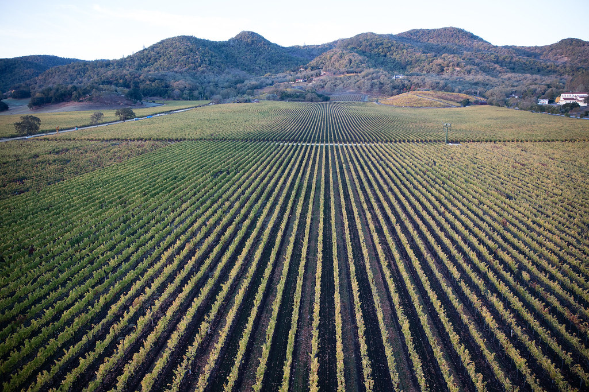
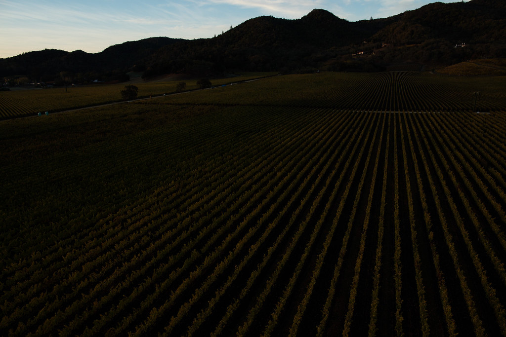

A benchmark farm transition programme for commercial crop systems moving away from highly hazardous pesticides.
Healthy Hectare helps commercial farms move toward safer biological and regenerative systems through practical implementation, expert support, and evidence-led monitoring.
Transition, made practical and measurable
Farms are facing rising input costs, growing concern over chemical residues, declining soil health, tighter export expectations, and increasing pressure to demonstrate credible environmental performance. Yet many growers still lack practical, tested pathways for moving away from highly hazardous pesticides without compromising quality or productivity.
Healthy Hectare closes that gap by turning transition into a practical, measurable farm process.

Outcomes that matter in the real world
Reduce HHP dependence
A phased path away from highly hazardous pesticides, and a lower overall chemical input burden.
Manage input costs
Comparative input cost reduction over time — optimised and managed, not reactive.
Protect yield & quality
Transition designed to maintain or improve yield and quality, with close monitoring as a safety net.
Build soil function
Improved soil function and resilience — treating soil as an appreciating asset, not a depleting one.
Reduce residues
Lower residues on produce, supporting market access and export expectations.
Generate credible evidence
Like-for-like measurement that can support future market, research, and regulatory engagement.

Small enough to manage risk. Large enough to prove a pathway.
The model is built around a defined parcel of land — small enough not to pose unacceptable economic risk to the farm, but large enough to validate a real transition pathway. Performance is measured on the same farm, so transition and conventional practice can be compared like for like.
Two ways to run the same hectare
| Standard approach | Healthy Hectare | |
|---|---|---|
| Soil | Depleting asset | Appreciating asset |
| Evidence model | Marketing claims | Baseline-to-outcome comparison — same farm, same conditions |
Early traction, honestly labelled
The programme is being shaped around a first pilot site and a benchmark transition model. This initial phase establishes the baseline, refines the monitoring approach, and produces early learning to guide implementation and future scale-up.
A leading commercial farm — the programme's first implementation site.
Baseline conditions and constraints will be established before transition begins.
A four-year, like-for-like transition cycle designed to be refined and replicated.
Building the practical evidence base for a safer agricultural future
If you are interested in funding, research partnership, pilot collaboration, or strategic support, we would welcome a conversation.